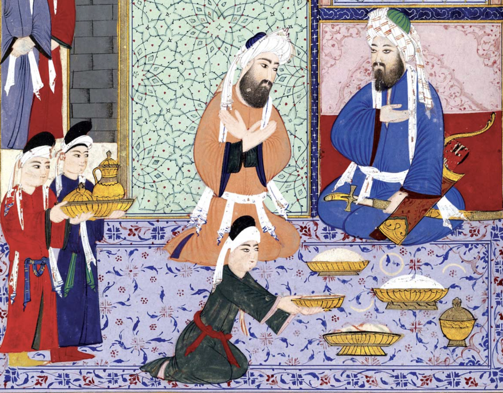
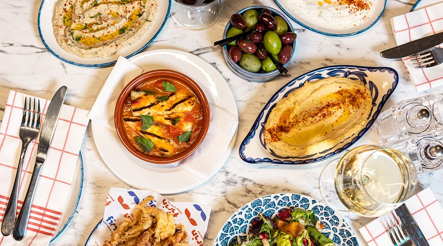

The History of Turkish Cuisine
Turkish cuisine has a long and rich history, deeply rooted in cultural exchanges and geographical diversity. Its origins trace back to the nomadic Turkic tribes of Central Asia, where the culinary traditions were based on livestock and dairy products. Meat, particularly lamb and horse meat, played a central role in the diet, alongside grains like wheat and barley, which were used to make bread and other staple foods. As the Turks migrated westward, they adapted their culinary practices to the regions they passed through, gradually shaping a diverse and dynamic food culture.
A significant phase in Turkish cuisine began with the Seljuk Empire, which brought the culinary traditions of Central Asia to Anatolia, enriching the local food culture. The Seljuk kitchen introduced a wide range of meat dishes, pilafs, and pastries, some of which laid the foundation for Ottoman cuisine. However, the most sophisticated and refined version of Turkish cuisine emerged during the Ottoman Empire.
Ottoman Empire Cuisine
The cuisine of the Ottoman Empire, especially in the palace kitchens, represents the pinnacle of Turkish culinary art. With its vast empire spanning from Europe to Asia and Africa, the Ottoman court kitchens utilized ingredients from across the world. These kitchens were known for their elaborate dishes, intricate flavors, and impressive presentation. The food prepared for the sultans was a reflection of their wealth and the diversity of their empire, with dishes like stuffed vine leaves (dolma), rich stews, kebabs, and desserts such as baklava.
The Ottoman Empire's cuisine was not just about taste; it also emphasized health benefits. The food was carefully crafted to nourish the body while delighting the senses. The influence of various cultures, such as Arab, Persian, Greek, and Balkan cuisines, contributed to the variety and richness of Ottoman dishes. Popular sweets like Turkish delight, muhallebi (milk pudding), and güllaç (a traditional dessert made with rose water and milk) were born in the imperial kitchens and became staples of Turkish culinary heritage.

Modern Turkish Cuisine
Today, Turkish cuisine continues to honor its rich traditions while embracing modern influences. Although traditional dishes like kebabs, mezes, and olive oil-based dishes remain at the core of Turkish food culture, there is a growing fusion of international flavors with local ingredients. Dishes like döner kebab, lahmacun, and pide have become internationally recognized, while regional specialties reflect the diversity of Türkiye’s culinary landscape. The meze culture, consisting of a wide variety of small dishes made with vegetables, meats, and yogurt, remains an essential part of Turkish dining.
One significant shift in recent years is the growing influence of fast food, although traditional Turkish flavors continue to dominate the culinary scene. Turkish cuisine, with its emphasis on fresh ingredients and healthy preparation, has adapted to contemporary food trends while preserving its deep roots in the past. Classic dishes like lamb kebabs, lentil soup, and baklava are still enjoyed across Türkiye, maintaining their status as cultural symbols of the country.
Turkish cuisine is a harmonious blend of ancient traditions, imperial legacy, and modern influences. Each region offers unique flavors and dishes that reflect the country’s diverse history. Whether through the sophisticated palace recipes of the Ottoman Empire or the simple, wholesome meals of today, Turkish cuisine continues to thrive on the global stage, preserving its place as a beloved and dynamic food culture.
← You can watch this video for more information.